Structured data are defined on the Structured Types element in the outline view of the model.
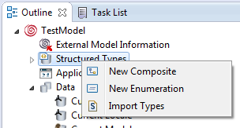
Figure: Structured Types in the Outline View
Two categories of structured data types can be defined
Additionally you can import Types, see section Importing Types.
The Structured Types tree contains a table tree structure with all defined structured types:
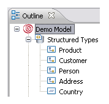
Figure: Structured Types Subtree
Composite types are data types with fields of the following types
Composite types can be used for example to describe data defining Person data or Order data.
To create a new composite type:
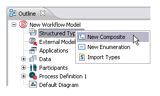
Figure: Create a New Composite Type.
The name of the new composite type can be specified in the General properties settings.
Using the Visibility Public option, you can specify whether you want to import type definition by reference when referenced in another model. By default, the Visibility Public checkbox is selected. For more information, please refer to Multi Package Modeling Preferences section of Setting Process Manager Preferences chapter.
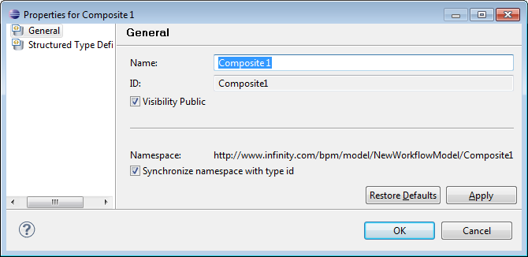
Figure: Composite Type - Visibility Public
The target namespace of the schema contained by a type declaration is selected by default. This namespace is used in creating and parsing XML documents based on this type declaration schema. A type declaration uses two fields, the location which specifies the id of the other model and the Xref which specifies the id of the type declaration in the other model.
To edit the new composite type, open its properties page with a double-click on its entry in the Structured Types tree.
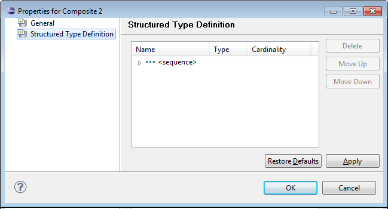
Figure: Structured Type tree
Data fields can be specified in the Structured Type Definition field.
To create a new data field, select the <new> table cell, type in a name for the data field to be created and press the TAB key. An entire row representing the new data field will be displayed and can be edited by selecting the corresponding table cells:
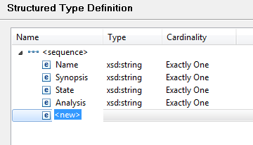
Figure: Structured Type Definition
Embedded Unions
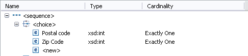
Figure: Setting a Choice Type.
In the Type column you can select xsd types as well as all other composite and enumeration types - except the current composite type to avoid recursion.
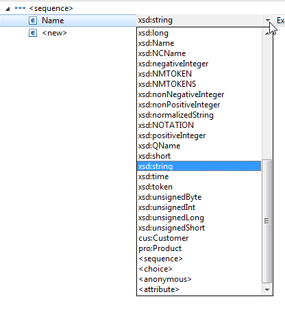
Figure: Choose a Type.
Anonymous substructures can be defined within a structure in order to fully support XSD composite structures without defining the substructures as separate data structure definitions.
For example:
<xs:complexType name="PaymentTypeInformation1">
<xs:sequence>
<xs:element name="InstrPrty" type="Priority2Code"/>
<xs:choice>
<xs:element name="SvcLvl" type="ServiceLevel2Choice"/>
<xs:element name="ClrChanl" type="ClearingChannel2Code"/>
</xs:choice>
<xs:element name="LclInstrm" type="LocalInstrument1Choice"/>
<xs:element name="CtgyPurp" type="PaymentCategoryPurpose1Code"/>
</xs:sequence>
</xs:complexType>
Selecting the <xsd:anonymous> type sets the type of the new field to <New Composition> and creates an indented line to enter subfields for this composition.
The <new> entry appears as the last node whenever the node is expanded.
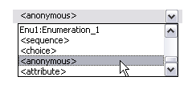
Figure: Selecting the Anonymous Type.
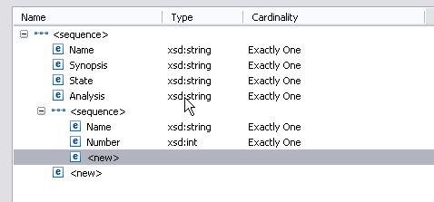
Figure: Subtree of Anonymous Type.
If the type of the field of the anonymous composition is changed to another type later, the subfields are deleted.
In case you intend to export a schema file containing XML attribute types, use the <attribute> type, e.g.:
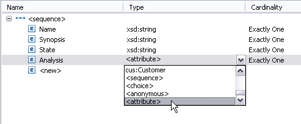
Figure: Selecting the Attribute Type.
An attribute type is displayed with an attribute icon on the left side of the name:
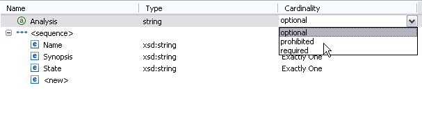
Figure: Attribute Type displayed in Structured Type Definition.
If you import a schema file containing XML attribute types, these types will be mapped as <attribute> type. Note that attribute types can have the cardinality Optional, Prohibited or Required as shown in the above figure.
For example importing a schema file containing:
...
<xsd:complexType name="Product">
<xsd:sequence>
<xsd:element name="Name" type="xsd:string"/>
<xsd:element name="Synopsis" type="xsd:string"/>
<xsd:element name="State" type="xsd:string"/>
</xsd:sequence>
<xsd:attribute name="Analysis" type="xsd:string" use="required"/>
</xsd:complexType>
<xsd:element name="Product" type="pro:Product"/>
...
will result in the following structured data definition:
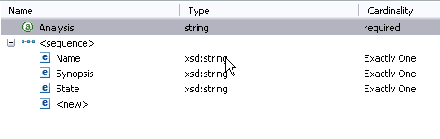
Figure: Imported Type Example.
In the Cardinality column, you can specify the cardinality of the structured data type. The following cardinalities can be selected:
Note that minOccurs is not enforced, and therefore Zero or One
and Exactly One are equivalent.
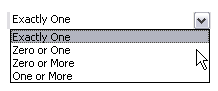
Figure: Choose Cardinality.
The One or More cardinality provides a list-like behavior.
For details on how activity panels display structured data with 1:N cardinality, please refer to section Activity Panel for 1:N Cardinality of Structured Data in chapter Working with interactive Activity Panels of the Stardust Portal documentation.
For Attribute types, the following cardinalities can be selected:
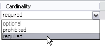
You can change the order of the keys by using the Move Up and Move Down buttons.
! Tip:
You can create your entire structure just by using the TAB key, typing in names and selecting types and cardinalities with the UP/DOWN keys.
The Stardust Structured Enumeration type supports three flavors of the xsd simple types that are enumerations, patterned and Java bound.
The Enumeration type means that the data object will be of type string and it will accept values from the list of values defined in the enumeration. Enumeration types are lists of enumeration keys, e.g. to describe salutations, titles or countries.
To create a new enumeration type:
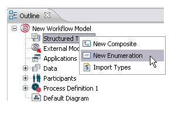
Figure: Create a New Enumeration Type.
To edit the properties of the enumeration type, double-click its entry in the structured types tree.
Select the <new> cell, type in an enumeration key and press the TAB key.
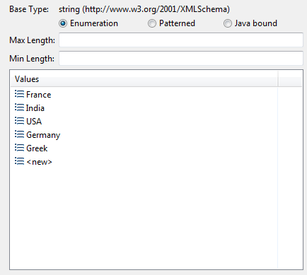
Optionally you can enter a Minimum Length and a Maximum Length for the enumeration field.
To change the order of enumeration keys use the Move Up and Move Down buttons.
The Patterned type means that the data object is of type string and it accepts values conforming to the defined pattern. Patterned types are series of values. You can define exact sequence of characters that are acceptable. For example, you can define series of numbers [0 - 9] and letters [a - z], gender [male - feamale] where you can give choice.
To create a new patterned type:
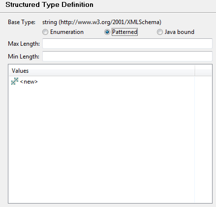
Figure: Patterned Type
Select the <new> cell, type in an enumeration key and press the TAB key.
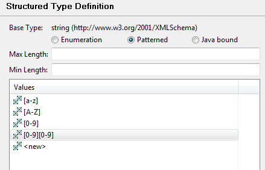
Figure: Patterned Type Values
Optionally you can enter a Minimum Length and a Maximum Length for the enumeration field.
To change the order of enumeration keys use the Move Up and Move Down buttons.
If you choose a Java bound base type, a field to enter the fully-qualified Java class name is provided. You also have the option to browse to the Java class. The enumeration values defined by the class are listed in the Values section.
For example, the following Java enum is used to determine an enumeration for currency:
package org.example.enumeration;
/**
* Determines currency enumeration values
*/
public enum Currency {
EUR, USD, GBP, INR, CHF, AUD
};
Browse to the Java class containing this enum type:
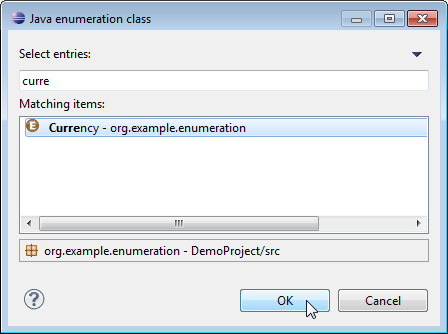
Figure: Browse to Java Class
The enumeration values defined in the Currency class are listed in the Values section.
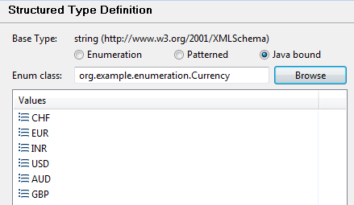
Figure: Java Bound Enumeration Type
XSD files describing one or more data structure definition can be imported. The corresponding data structure definitions will be created.
To import an xsd file select Structured Types > Import Types in the Outline view:
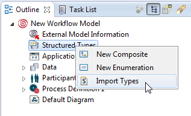
Figure: Import Types
A dialog opens where you can choose if you want to select the schema from:
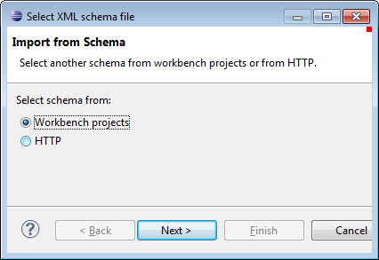
Figure: Choose where to select the Schema from.
In case you chose to select from workbench project, the next dialog offers to import files from the project or the file system.
To import a file from the project resource folders, select the source file and click the Import Files... button.
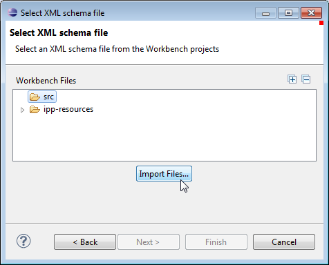
Figure: Import files from project
The file import dialog opens, where you can browse to the import resource in your local file system. Select one or more xsd files.
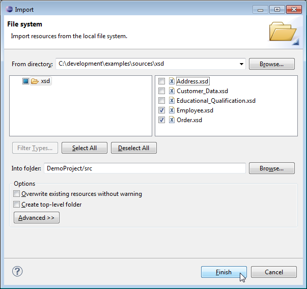
Figure: Browse to XSD Files
Now select Finish to accept the files you selected. These files will be added to the chosen source folder of your project.
Select the schema file to be imported from the project and click Next.
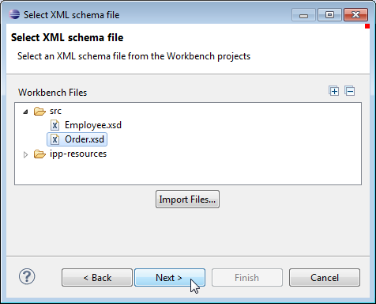
Figure: Select an XML Schema File
Choose the types you want to import and select Finish to close the dialog.
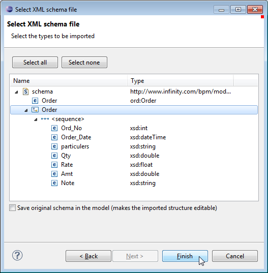
Figure: Choose the Types to be imported
You see the imported xsd files in the chosen source folder of your project:
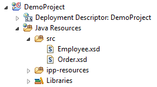
Figure: Imported xsd files in project resource folder
The imported xsd type is visible in the Structured Types section in the Outline view:
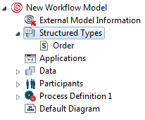
Figure: Imported xsd type
To select the schema from HTTP:
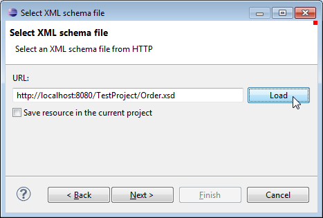
Figure: Enter a URL for your schema.
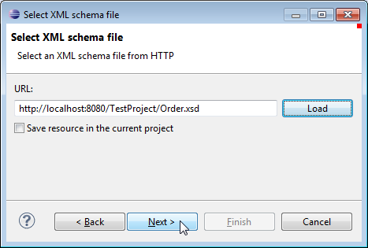
Figure: Using the Loaded Schema
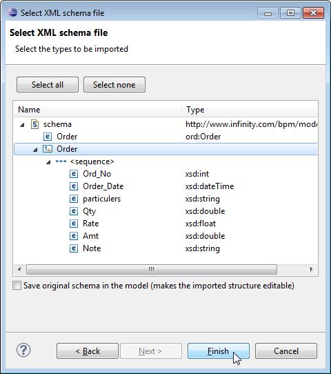
Figure: Select the Types to be imported.
Now the imported type is added to your model. You can see it in the structured types tree of the Outline view, e.g.:
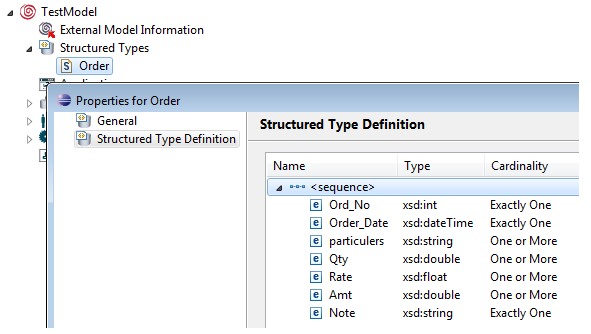
Figure: Imported Structured Type
Note
Please note that there will be no warning in case the imported types have
the same name or Id like existing structured types. You need to rename them explicitly.
In case an external schema referenced via HTTP has changed, you need to reload this schema to make these changes effective. Right-click the schema in the Outline view and select Reload Schema.
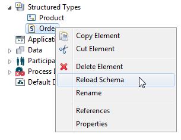
Figure: Reload Schema option
Importing schemas with data paths that traverse a wildcard node (xs:any) is supported. However you have to manually edit the xpath in the corresponding text fields to be able to access xml nodes that are not declared by the schema.
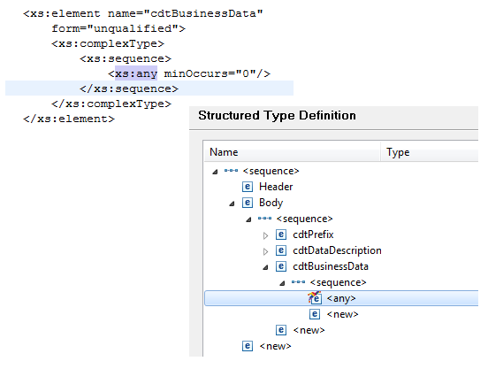
Figure: Wildcard in imported schema
Note that XML documents containing elements in place of wildcards with no corresponding type declaration are not supported.
In some cases you might import schemas having xpaths for nodes with the same name but different namespaces used in place of wildcards. For example, if you have an xpath in the form x/y/node, where the schema for element declaration y contains a wildcard (xs:any) but no node element declaration, the evaluator picks the first type declaration where the root node that has the same local name as the xpath segment (in this case node). Now if you have multiple type declarations for elements named node but with a different namespace, the first node could be the wrong node selected. Thus the modeler distinguishs which node schema has to be used. This is done by qualifying the specific segment in the xpath. There are two ways of qualifying the segments:
In case a model has a reference to an external structured type definition that is also referenced by other models, a change of this structured type definition can cause problems in some of these models. If you change an XSD which is referenced by multiple models, you must make sure that it is still valid for all other referencing models. We recommend to give the XSD file an unique name for every model version to prevent invalid XSDs.
The following example shows such a situation:
If you change the content of XSD_GLOBAL, it can happen that the XSD is valid for Model_B but no longer for Model_A. Using two XSDs with unique names like XSD_GLOBAL_A and XSD_GLOBAL_B would prevent this problem.
Data structure definitions can be exported to XSD for single data structures or for all data structure definitions in a process model. To export a structured data type:
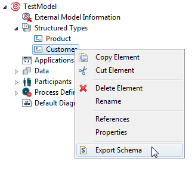
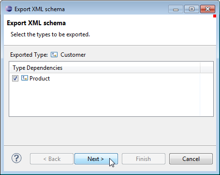
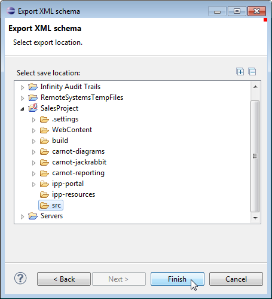
Now the exported types appear as xsd files in the selected folder, e.g.:
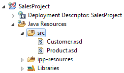
Figure: Exported Schema Files
If the imported XSDs contain extension type or if such a model is imported from Web-based modeler then the property page of the structured type definition displays the extended types as shown:
<?xml version="1.0"?>
<xs:schema xmlns:xs="http://www.w3.org/2001/XMLSchema">
<xs:element name="employee" type="fullpersoninfo"/>
<xs:complexType name="personinfo">
<xs:sequence>
<xs:element name="firstname" type="xs:string"/>
<xs:element name="lastname" type="xs:string"/>
</xs:sequence>
</xs:complexType>
<xs:complexType name="fullpersoninfo">
<xs:complexContent>
<xs:extension base="personinfo">
<xs:sequence>
<xs:element name="address" type="xs:string"/>
<xs:element name="city" type="xs:string"/>
<xs:element name="country" type="xs:string"/>
</xs:sequence>
</xs:extension>
</xs:complexContent>
</xs:complexType>
</xs:schema>
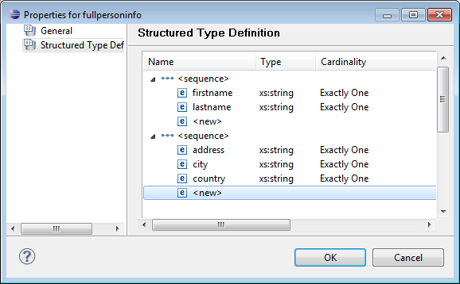
Figure: Extended Structured Type
In case you use structured data that has a cardinality zero or more in scoped data, the data path must be set as structured data field [<number>]. If no field number is set, the following warning appears:
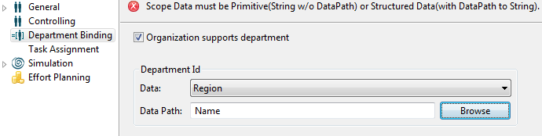
Figure: Structured Data with Cardinality - Validation Warning
You need to set a field number as in the following valid example:
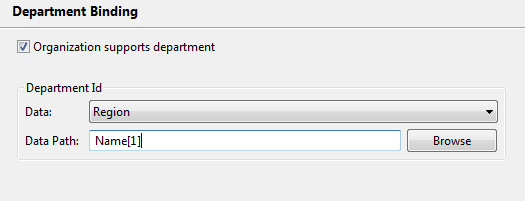
Figure: Valid Structured Data usage with Cardinality
Once the file connection is established, the referenced structured data definition can be referred in another model. Note that the structured types from the referenced model are read only. You cannot edit the referenced structured types. To refer the structure data in the referencing model:
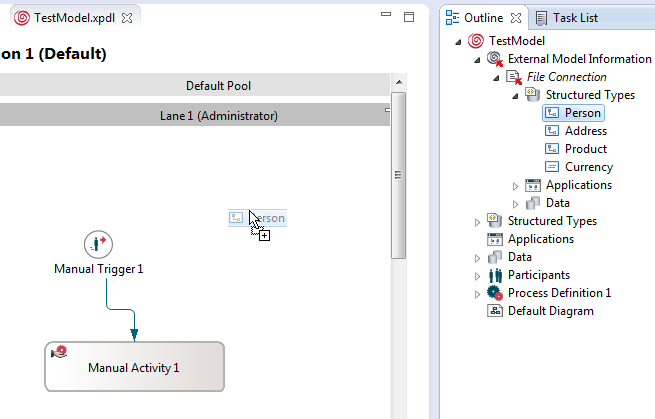
Figure: Drag Referenced Structured Data
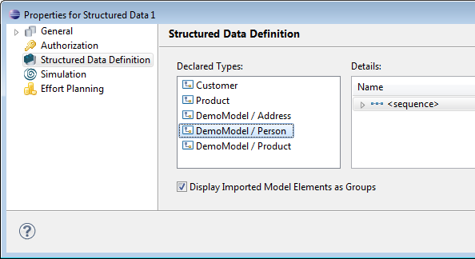
Figure: Referenced Declared Type
Process data of structured type are stored in the tables in the Stardust Audit Trail Database. The storage layout is optimized for efficient access in queries.
See details about structured data storage in the chapter Structured Data Storage of the Operation Guide.